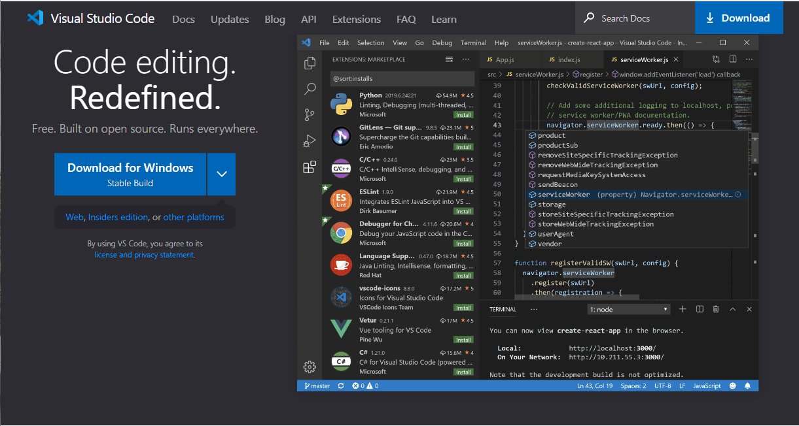
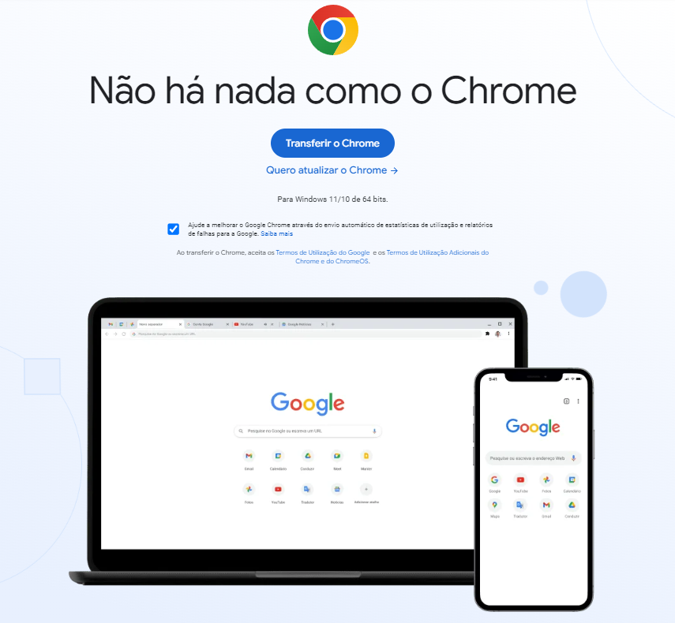

A trajetória da web começa como uma semente plantada em 1989 por Tim Berners-Lee, quando ele criou o conceito de "World Wide Web". Com o protocolo HTTP e a linguagem HTML, a web rapidamente cresceu, estabelecendo-se como um fenômeno global na década de 1990, impulsionado pelo surgimento de navegadores mais amigáveis, como o "Mosaic". Essa expansão trouxe consigo o nascimento de empresas revolucionárias, como o Google, e permitiu que o comércio eletrônico florescesse. A era da "Web 2.0" trouxe interatividade e colaboração sem precedentes, com redes sociais e plataformas de compartilhamento de conteúdo emergindo como forças motrizes. Na década de 2020, a web continua sua evolução, incorporando novas tecnologias, como realidade aumentada e blockchain, apresentando um futuro repleto de possibilidades infinitas para a sociedade digital.
Os clientes web são componentes fundamentais da arquitetura cliente-servidor na internet. Eles representam a interface pela qual os usuários interagem com os recursos e serviços disponibilizados pelos servidores web. Um cliente web pode ser um navegador tradicional em um computador ou dispositivo móvel, um aplicativo específico ou até mesmo um dispositivo de Internet das Coisas (IoT). Quando os usuários digitam um URL em um navegador ou solicitam informações de um aplicativo, o cliente web envia uma solicitação ao servidor web relevante. Em resposta, o servidor envia os dados ou recursos solicitados de volta ao cliente, responsável por processá-los e apresentá-los de forma amigável ao usuário. Essa comunicação cliente-servidor é essencial para a dinâmica da web, permitindo que os usuários naveguem na internet, acessem conteúdo, realizem transações online e desfrutem de uma ampla gama de serviços que a rede mundial oferece. Em suma, os clientes web são o ponto de partida para a interação dos usuários com o mundo digital, conectando-os aos servidores que fornecem os recursos e informações desejados.
Servidores são elementos fundamentais na infraestrutura da internet, atuando como computadores especializados em armazenar, processar e fornecer informações e serviços para os clientes web. Eles podem ser divididos em vários tipos, como servidores web, que hospedam sites e aplicativos online; servidores de e-mail, responsáveis pelo gerenciamento e entrega de e-mails; servidores de banco de dados, que armazenam e gerenciam dados; servidores de arquivos, compartilhando recursos entre computadores em uma rede, entre outros. No contexto do software, um servidor refere-se a programas projetados para lidar com solicitações dos clientes, como Apache e Nginx para servidores web. Em relação ao hardware, os servidores são máquinas poderosas com configurações otimizadas para desempenho e confiabilidade, geralmente sem interface gráfica e acessados remotamente. Eles são hospedados em data centers, que oferecem condições ideais para garantir alta disponibilidade, velocidade e segurança. Os servidores desempenham um papel vital ao permitir a disseminação de informações e a execução de serviços online, impulsionando a dinâmica da internet e permitindo que a sociedade global se conecte e colabore de forma eficiente e eficaz.
As linguagens de programação web são as bases essenciais para a criação de
sites e aplicativos interativos na internet. Elas desempenham um papel
fundamental no desenvolvimento de soluções modernas e dinâmicas que
impulsionam a web para o futuro.
No lado do servidor, essas linguagens são usadas para processar dados,
realizar cálculos complexos e interagir com bancos de dados antes de
enviar as informações finais para os navegadores dos usuários. Exemplos de
linguagens server side incluem PHP, Python, Ruby e Node.js. Cada uma
dessas linguagens possui suas vantagens e é frequentemente utilizada em
conjunto com frameworks poderosos que simplificam o desenvolvimento web.
Já no lado do cliente, linguagens de programação são interpretadas
diretamente pelos navegadores dos usuários e são responsáveis por
interações em tempo real, validação de formulários e manipulação do
conteúdo exibido na página. A linguagem client side mais proeminente é o
JavaScript, que possibilita a criação de interfaces interativas e
dinâmicas.
Embora o HTML e o CSS não sejam considerados linguagens de programação no
sentido tradicional, são cruciais para a estruturação, formatação e estilo
dos elementos na página. O HTML é usado para organizar o conteúdo,
enquanto o CSS é responsável pelo layout e design visual.
Além disso, algumas linguagens podem ser utilizadas em ambos os lados,
como o JavaScript, que possibilita a construção de aplicações de página
inteira, chamadas Single Page Applications (SPAs), tornando a experiência
do usuário mais fluída e interativa.
Em nosso curso utilizamos o VS Code. Ele é um editor de código bastante popular, ideal para desenvolvimento web. Com suporte multiplataformas e código aberto, oferece uma experiência de codificação eficiente e personalizável. Seu ambiente amigável, extensões úteis e integração com Git tornam-no uma escolha preferida por muitos desenvolvedores. Você pode fazer o download do VS Code gratuitamente aqui.
O Google Chrome é uma ferramenta essencial para o desenvolvimento web, oferecendo uma experiência completa com seu modo desenvolvedor integrado. Com recursos de inspeção, depuração e otimização de código, o modo desenvolvedor permite aos programadores analisar e aprimorar suas páginas web em tempo real. Além disso, com a capacidade de testar responsividade e simular dispositivos móveis, o Google Chrome é uma escolha confiável para criar sites e aplicativos modernos e otimizados para diferentes plataformas. Você pode fazer o download do Google Chrome gratuitamente aqui.

Temos também estes outros tipos de tags:
Para ampliar se conhecimento, visite as paginas a seguir:
HTML
w3schools
Mozilla Developer Network
História da web
client-side-vs-server-side